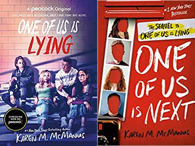

Never will I ever recommend a bad book. Rest assured these books will be holding you in a chokehold when your finished. These books will either leave you in tears or floating in a boat of happiness. I have a very high standard when rating books so rest assured that these books are the real deal.
I wouldn't say fantasy is my favourite genre but I love the adventure it takes you on, whether the plot itself but also with the characters. These books will
There aren't many standolone fantasy novels so finding this book was a blessing. I can't really deal with fantasy books because of the long and intense world building that sometimes is the whole book so this book really was refreshing. This book is great as a quick read for fantasy lovers in a slump who want something with a good plot, romance, found family trope, and a suberp main lead. (Read synopsis on Goodreads).

This book has kept me in a chokehold for the past 2 years. About every week I remember this series and want so badly to experience reading it for the first time again. It really is a shame that The Mortal Instruments were created by the same author but I find that it was totally worth it to reac the first half of that series to perfectly understand this one. (Read synopsis on Goodreads).


These books
By far my most favourite genre of fiction, mystery is always delightful to read no matter if its to do with murder

If you're a historical fiction and mystery lover like me then you'd love this series. These books will leave you satisfied after each read with it's some-what predictable but greatly written plot twists but will have you coming back for more. (Read synopsis on Goodreads).

I wouldn't say the best part of this series is the mystery (yes, I know this is litterly in the best read mysteries section) because frankly that part didn't really seem intresting nor unpredictable. The true reason that this book gets all the hype is because of the characters, more specifically the romance between them.


Dystopian isn't a genre I read a lot about, nothing against it, it's just sometimes that I'm never really in the mood to read one. But these books have definetly put a smile on my face from time to time.

By far my favourite dystopian series in the world, Legend is an amazingly written and loveable series. From the characters to the plot and world itself, this series has everything you could ask for in a dystopian. (Read synopsis on Goodreads).

Even if this book was something I had to read for class, this book is a great, short read that not only entertains but brings awareness to the mistreatment and oppresion of Indeginous people in Canada. (Read synopsis on Goodreads).
Return to the top of the page.